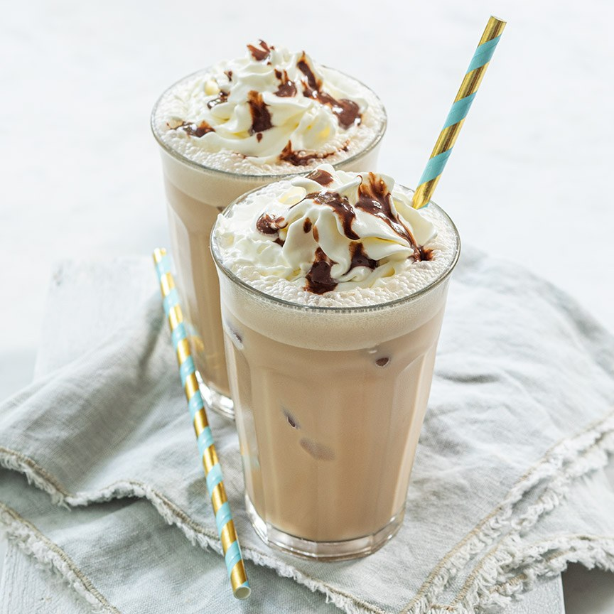

Frappuccino mokka
Een heerlijke ijskoude koffie met chocolade en slagroom.
Ingrediënten
- 2 kopjes afgekoelde koffie
- 200 ml melk
- 2 eetlepels suiker
- Ijsblokjes
- Spuitbus slagroom
- 3 eetlepels chocoladesaus
Bereidingswijze
- Doe de ijsblokjes in de blender. Voeg de koffie, melk, 2 eetlepels chocoladesaus en de suiker toe en mix door elkaar.
- Giet het in 2 glazen en spuit er een toef slagroom op en garneer met wat chocoladesaus.

TipVoeg mini marshmellows toe voor een feestelijke toetje.